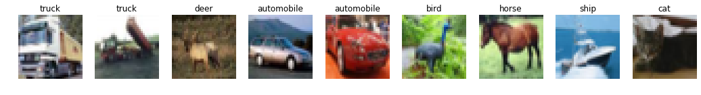
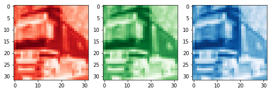
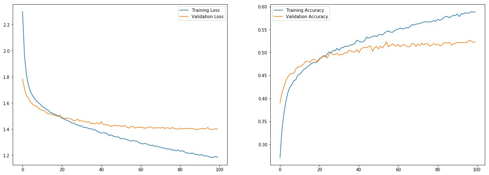
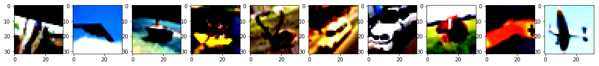
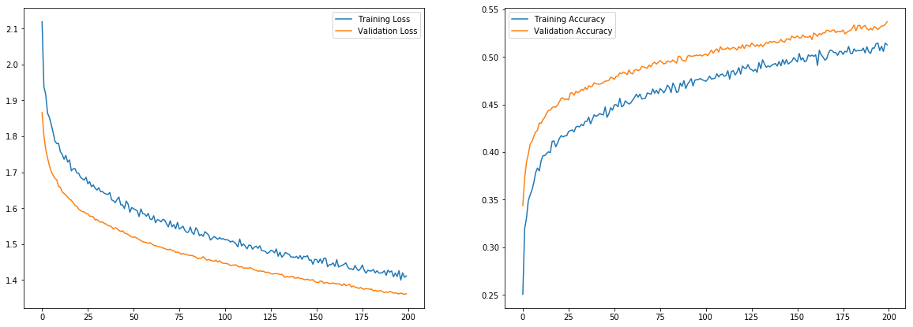

Deep Learning - Beginners Track
Instructor: Shangeth Rajaa
We will use ANNs for a basic computer vision application of image classification on CIFAR10 Dataset
Dataset
CIFAR-10
The CIFAR-10 dataset consists of 60000 32x32 colour images in 10 classes, with 6000 images per class. There are 50000 training images and 10000 test images.

Download the Dataset
Tensorflow has inbuilt dataset which makes it easy to get training and testing data.
from tensorflow.keras.datasets import cifar10
import tensorflow as tf
(x_train, y_train), (x_test, y_test) = cifar10.load_data()
class_name = {
0: 'airplane',
1: 'automobile',
2: 'bird',
3: 'cat',
4: 'deer',
5: 'dog',
6: 'frog',
7: 'horse',
8: 'ship',
9: 'truck',
}
Visualize the Dataset
import matplotlib.pyplot as plt
num_imgs = 10
plt.figure(figsize=(num_imgs*2,3))
for i in range(1,num_imgs):
plt.subplot(1,num_imgs,i).set_title('{}'.format(class_name[y_train[i][0]]))
plt.imshow(x_train[i])
plt.axis('off')
plt.show()

Scaling Features
import numpy as np
np.max(x_train), np.min(x_train)
(255, 0)
The range of values in the data is 0-255, - we can scale it to [0,1], dividing it by 255 will do. - or we can standardize it by subtracting the mean and dividing std.
mean = np.mean(x_train)
std = np.std(x_train)
x_train = (x_train-mean)/std
x_test = (x_test-mean)/std
np.max(x_train), np.min(x_train), np.max(x_test), np.min(x_test)
(2.09341038199596, -1.8816433721538972, 2.09341038199596, -1.8816433721538972)
Labels to One-Hot
print(y_train[:5])
[[6]
[9]
[9]
[4]
[1]]
num_classes = 10
y_train = tf.keras.utils.to_categorical(y_train, num_classes)
y_test = tf.keras.utils.to_categorical(y_test, num_classes)
print(y_train[:5])
[[0. 0. 0. 0. 0. 0. 1. 0. 0. 0.]
[0. 0. 0. 0. 0. 0. 0. 0. 0. 1.]
[0. 0. 0. 0. 0. 0. 0. 0. 0. 1.]
[0. 0. 0. 0. 1. 0. 0. 0. 0. 0.]
[0. 1. 0. 0. 0. 0. 0. 0. 0. 0.]]
Colour Channels
Let’s check the shape of the arrays
x_train.shape, y_train.shape, x_test.shape, y_test.shape
((50000, 32, 32, 3), (50000, 10), (10000, 32, 32, 3), (10000, 10))
The shape of each image is (32 x 32 x 3), previously we saw MNIST dataset had a shape of (28 x 28), why is it so?
MNIST is a gray-scale image, it has a single channel of gray scale. But CIFAR-10 is a colour image, every colour pixel has 3 channels RGB, all these 3 channel contribute to what colour you see.
Any colour image is made of 3 channels RGB.
Visualize colour channels
import matplotlib.pyplot as plt
plt.figure(figsize=(9,3))
plt.subplot(1,3,1)
plt.imshow(x_train[1][:,:,0], cmap='Reds')
plt.subplot(1,3,2)
plt.imshow(x_train[1][:,:,1], cmap='Greens')
plt.subplot(1,3,3)
plt.imshow(x_train[1][:,:,2], cmap='Blues')
plt.show()

So when we flatten the CIFAR-10 image, it will give 32x32x3 = 3072.
Model
import tensorflow as tf
from tensorflow import keras
tf.keras.backend.clear_session()
input_shape = (32,32,3) # 3072
nclasses = 10
model = tf.keras.Sequential([
tf.keras.layers.Flatten(input_shape=input_shape),
tf.keras.layers.Dense(units=1024),
tf.keras.layers.Activation('tanh'),
tf.keras.layers.Dropout(0.5),
tf.keras.layers.Dense(units=512),
tf.keras.layers.Activation('tanh'),
tf.keras.layers.Dropout(0.5),
tf.keras.layers.Dense(units=nclasses),
tf.keras.layers.Activation('softmax')
])
model.summary()
Model: "sequential"
_________________________________________________________________
Layer (type) Output Shape Param #
=================================================================
flatten (Flatten) (None, 3072) 0
_________________________________________________________________
dense (Dense) (None, 1024) 3146752
_________________________________________________________________
activation (Activation) (None, 1024) 0
_________________________________________________________________
dropout (Dropout) (None, 1024) 0
_________________________________________________________________
dense_1 (Dense) (None, 512) 524800
_________________________________________________________________
activation_1 (Activation) (None, 512) 0
_________________________________________________________________
dropout_1 (Dropout) (None, 512) 0
_________________________________________________________________
dense_2 (Dense) (None, 10) 5130
_________________________________________________________________
activation_2 (Activation) (None, 10) 0
=================================================================
Total params: 3,676,682
Trainable params: 3,676,682
Non-trainable params: 0
_________________________________________________________________
Training
optimizer = tf.keras.optimizers.Adam(lr=0.001)
model.compile(optimizer=optimizer, loss='categorical_crossentropy', metrics=['accuracy'])
tf_history_dp = model.fit(x_train, y_train, batch_size=500, epochs=100, verbose=True, validation_data=(x_test, y_test))
Train on 50000 samples, validate on 10000 samples
Epoch 1/100
50000/50000 [==============================] - 3s 57us/sample - loss: 2.2985 - acc: 0.2712 - val_loss: 1.7830 - val_acc: 0.3898
Epoch 2/100
50000/50000 [==============================] - 3s 53us/sample - loss: 1.9610 - acc: 0.3329 - val_loss: 1.7066 - val_acc: 0.4134
.
.
Epoch 99/100
50000/50000 [==============================] - 3s 51us/sample - loss: 1.1897 - acc: 0.5877 - val_loss: 1.4037 - val_acc: 0.5220
Epoch 100/100
50000/50000 [==============================] - 3s 51us/sample - loss: 1.1839 - acc: 0.5884 - val_loss: 1.3991 - val_acc: 0.5227
import matplotlib.pyplot as plt
plt.figure(figsize=(20,7))
plt.subplot(1,2,1)
plt.plot(tf_history_dp.history['loss'], label='Training Loss')
plt.plot(tf_history_dp.history['val_loss'], label='Validation Loss')
plt.legend()
plt.subplot(1,2,2)
plt.plot(tf_history_dp.history['acc'], label='Training Accuracy')
plt.plot(tf_history_dp.history['val_acc'], label='Validation Accuracy')
plt.legend()
plt.show()

Model is clearly overfitting.
Image Augmentation
We have discussed that, more images/data improves the model performance and avoid overfitting. But it’s not always possible to get new data, so we can augment the old data to create new data.

Augmentation can be: - random crop - rotation - horizontal and vertical flips - x-y shift - colour jitter - etc.
Image Augmentation in Tensorflow
from tensorflow.keras.datasets import cifar10
import tensorflow as tf
(x_train, y_train), (x_test, y_test) = cifar10.load_data()
x_train = (x_train-mean)/std
x_test = (x_test-mean)/std
num_classes = 10
y_train = tf.keras.utils.to_categorical(y_train, num_classes)
y_test = tf.keras.utils.to_categorical(y_test, num_classes)
import tensorflow as tf
from tensorflow import keras
tf.keras.backend.clear_session()
input_shape = (32,32,3) # 3072
nclasses = 10
model = tf.keras.Sequential([
tf.keras.layers.Flatten(input_shape=input_shape),
tf.keras.layers.Dense(units=1024),
tf.keras.layers.Activation('tanh'),
tf.keras.layers.Dropout(0.2),
tf.keras.layers.Dense(units=512),
tf.keras.layers.Activation('tanh'),
tf.keras.layers.Dropout(0.2),
tf.keras.layers.Dense(units=nclasses),
tf.keras.layers.Activation('softmax')
])
model.summary()
Model: "sequential"
_________________________________________________________________
Layer (type) Output Shape Param #
=================================================================
flatten (Flatten) (None, 3072) 0
_________________________________________________________________
dense (Dense) (None, 1024) 3146752
_________________________________________________________________
activation (Activation) (None, 1024) 0
_________________________________________________________________
dropout (Dropout) (None, 1024) 0
_________________________________________________________________
dense_1 (Dense) (None, 512) 524800
_________________________________________________________________
activation_1 (Activation) (None, 512) 0
_________________________________________________________________
dropout_1 (Dropout) (None, 512) 0
_________________________________________________________________
dense_2 (Dense) (None, 10) 5130
_________________________________________________________________
activation_2 (Activation) (None, 10) 0
=================================================================
Total params: 3,676,682
Trainable params: 3,676,682
Non-trainable params: 0
_________________________________________________________________
from tensorflow.keras.preprocessing.image import ImageDataGenerator
train_datagen = ImageDataGenerator(
shear_range=0.1,
zoom_range=0.1,
horizontal_flip=True,
rotation_range=20)
test_datagen = ImageDataGenerator()
train_generator = train_datagen.flow(
x_train, y_train,
batch_size=200)
validation_generator = test_datagen.flow(
x_test, y_test,
batch_size=200)
import matplotlib.pyplot as plt
i = 1
plt.figure(figsize=(20,2))
for x_batch, y_batch in train_datagen.flow(x_train, y_train, batch_size=1):
plt.subplot(1,10,i)
plt.imshow(x_batch[0])
i += 1
if i>10:break

You can see some of the images are zoomed, some are rotated…etc. SO these images are now different that the original image and for the model these are new images.
optimizer = tf.keras.optimizers.SGD(lr=0.001, momentum=0.9)
model.compile(optimizer=optimizer, loss='categorical_crossentropy', metrics=['accuracy'])
model.fit_generator(
train_generator,
steps_per_epoch=100,
epochs=200,
validation_data=validation_generator)
Epoch 1/200
100/100 [==============================] - 11s 113ms/step - loss: 2.1187 - acc: 0.2506 - val_loss: 1.8658 - val_acc: 0.3438
Epoch 2/200
100/100 [==============================] - 11s 105ms/step - loss: 1.9376 - acc: 0.3195 - val_loss: 1.8019 - val_acc: 0.3725
.
.
Epoch 199/200
100/100 [==============================] - 10s 102ms/step - loss: 1.4075 - acc: 0.5145 - val_loss: 1.3601 - val_acc: 0.5340
Epoch 200/200
100/100 [==============================] - 10s 104ms/step - loss: 1.4111 - acc: 0.5127 - val_loss: 1.3616 - val_acc: 0.5369
<tensorflow.python.keras.callbacks.History at 0x7f644a09bcc0>
import matplotlib.pyplot as plt
tf_history_aug = model.history
plt.figure(figsize=(20,7))
plt.subplot(1,2,1)
plt.plot(tf_history_aug.history['loss'], label='Training Loss')
plt.plot(tf_history_aug.history['val_loss'], label='Validation Loss')
plt.legend()
plt.subplot(1,2,2)
plt.plot(tf_history_aug.history['acc'], label='Training Accuracy')
plt.plot(tf_history_aug.history['val_acc'], label='Validation Accuracy')
plt.legend()
plt.show()

The model is not overfitting and the performance is still increasing, so training for more epoch can give a good performance, but it will take more time, so we will stop here. Try to improve the model.
- Train the model longer.
- Use different architecture with aug
- use different activation
- different optimizer
There are other model architectures which work good for images, we will discuss that in the intermediate track.
Saving a Trained Model
Saving a trained model is very important, hours of training should not be wasted and we need the trained model to be deployed in some other device. It’s very simple in tf.keras
model_path = 'cifar10_trained_model.h5'
model.save(model_path)
!ls
cifar10_trained_model.h5 sample_data
Loading a saved model
from tensorflow.keras.models import load_model
model = load_model(model_path)
model.summary()
Model: "sequential"
_________________________________________________________________
Layer (type) Output Shape Param #
=================================================================
flatten (Flatten) (None, 3072) 0
_________________________________________________________________
dense (Dense) (None, 1024) 3146752
_________________________________________________________________
activation (Activation) (None, 1024) 0
_________________________________________________________________
dropout (Dropout) (None, 1024) 0
_________________________________________________________________
dense_1 (Dense) (None, 512) 524800
_________________________________________________________________
activation_1 (Activation) (None, 512) 0
_________________________________________________________________
dropout_1 (Dropout) (None, 512) 0
_________________________________________________________________
dense_2 (Dense) (None, 10) 5130
_________________________________________________________________
activation_2 (Activation) (None, 10) 0
=================================================================
Total params: 3,676,682
Trainable params: 3,676,682
Non-trainable params: 0
_________________________________________________________________